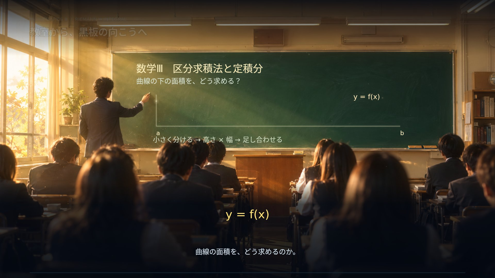
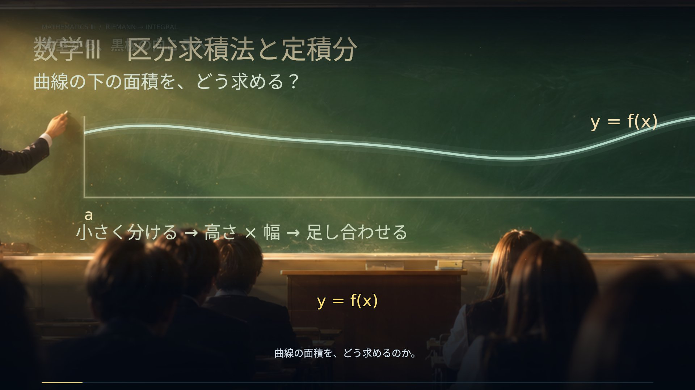
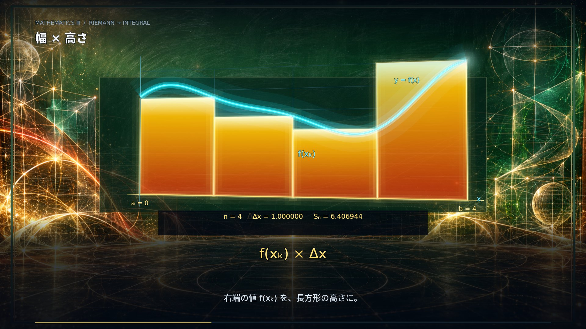
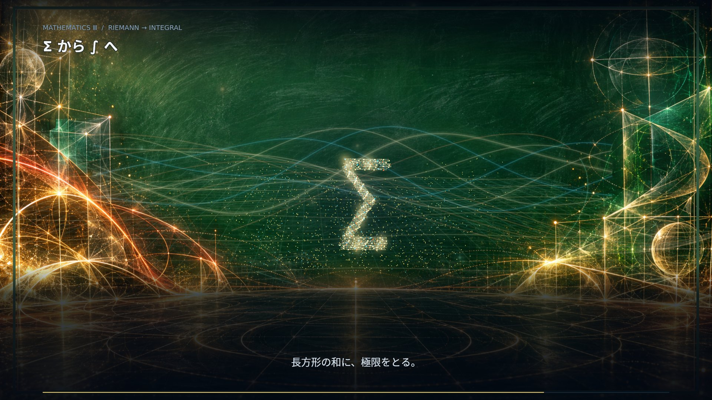

A QUESTION IN THE CLASSROOM / 数学Ⅲ
夕光の中で始まる授業。カメラが黒板に近づき、チョークの曲線へ。金・朱・青緑の光が、分割、和、極限の説明に合わせて広がります。
120秒 / 1920 × 1080 / 30fpsナレーションなし




教室から黒板へのカメラ移動と、動く数式・図形を組み合わせた新しい映画版です。黒板の周囲の光は演出です。計算用の曲線・長方形は右端和に対応し、定積分との等号は極限の式に用いています。